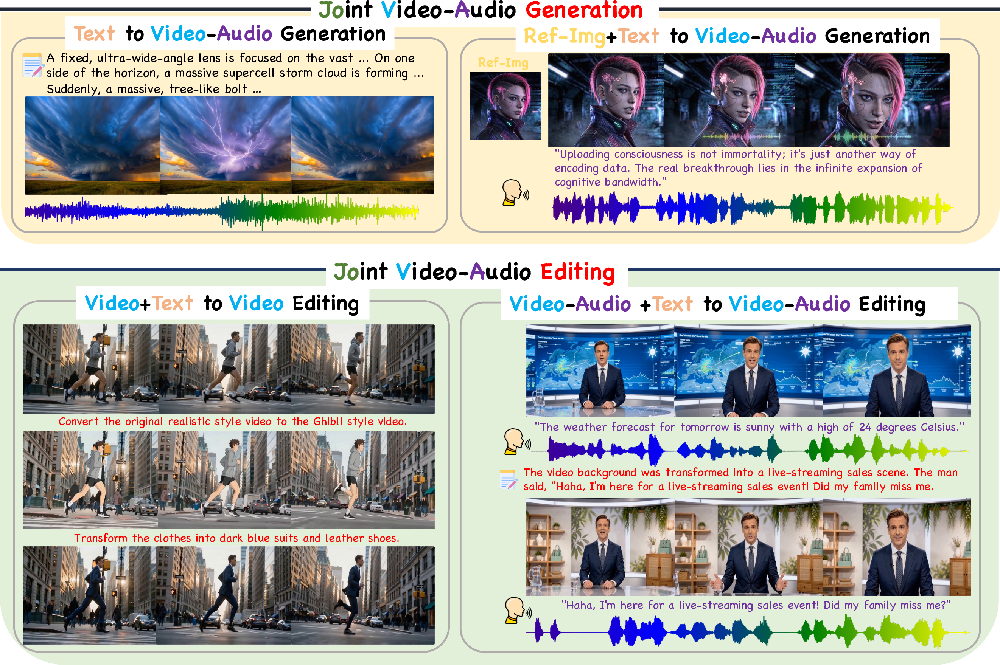
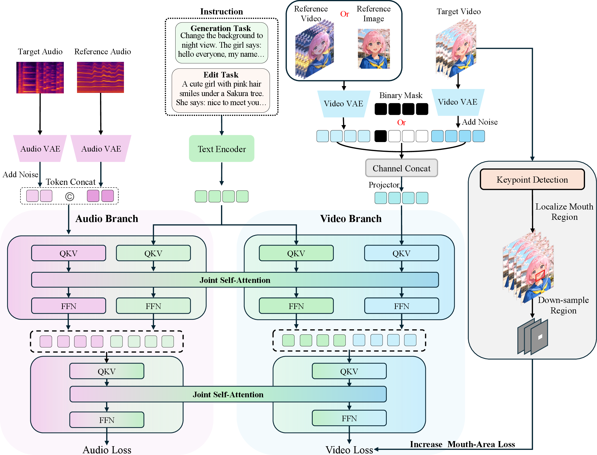
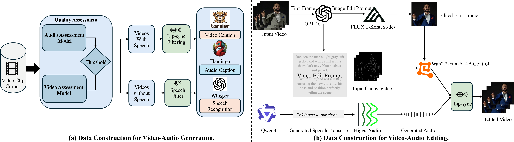
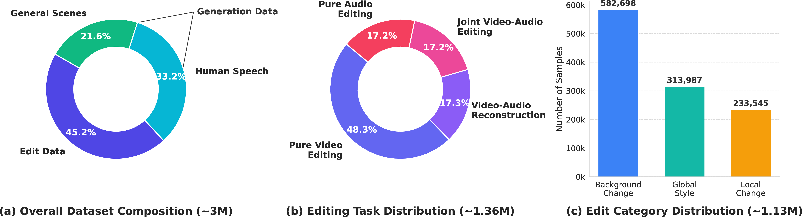

In this paper, we present JoVA, a streamlined framework that unifies joint video-audio generation and editing. While existing methods often rely on fragmented, task-specific architectures or complex fusion mechanisms, JoVA employs native joint representation learning for direct video, audio, and text interaction in a dual-branch architecture. This design eliminates redundant alignment modules and effectively unifies diverse multimodal tasks within a single model. Furthermore, we utilize channel-wise conditioning for flexible image and video reference to avoid massive token expansion, alongside a mouth-area loss to enhance lip alignment. To fully empower and systematically evaluate this framework, we construct a comprehensive training corpus encompassing video-audio generation and editing datasets, and introduce unified benchmarks tailored for these multimodal tasks. Extensive experiments demonstrate that JoVA achieves state-of-the-art performance across benchmarks, establishing it as an extensible framework for versatile content creation.

Figure 1: Overview of the JoVA framework. JoVA seamlessly unifies various multimodal tasks within a single model, including text-to-video-audio generation, reference-image-conditioned generation, video editing, and joint video-audio editing.
Figure 1: Demonstration of JoVA generating and editing synchronized video and audio.

Figure 2: Overall architecture of the proposed JoVA framework. The model natively unifies video and audio generation and editing through a joint self-attention mechanism. Channel-wise concatenation with a binary mask flexibly integrates reference videos or images, while a localized mouth-area loss ensures lip-speech synchronization during training.
JoVA processes video, audio, and text tokens through native joint representation learning in a dual-branch architecture, enabling direct cross-modal interaction while eliminating redundant alignment modules. Channel-wise conditioning allows flexible image and video references without token expansion, and a mouth-area loss enhances lip synchronization for high-fidelity audio-visual generation and editing.

Figure 3: Overview of our training data construction pipelines. (a) Video-Audio Generation Data: raw videos undergo quality assessment, filtering, and multimodal annotation including video/audio captioning and speech recognition. (b) Video-Audio Editing Data: a workflow to synthesize paired editing data using foundation models for visual editing, audio generation, and lip-sync alignment.

Figure 4: Detailed statistics of our video-audio-text dataset (~3M samples). The dataset covers both generation and editing data, including General Scenes (21.6%), Human Speech (33.2%), and Edit Data (45.2%).
JoVA achieves state-of-the-art performance across three benchmarks: JoVABench-Gen and JoVABench-Edit (our introduced unified benchmarks), and the public Verse-Bench.
| Method | LSE-C | WER | FD | KL | CS | CE | CU | PC | PQ | MS | AS | ID |
|---|---|---|---|---|---|---|---|---|---|---|---|---|
| Audio-Driven Generation | ||||||||||||
| FantasyTalking | 3.10 | - | - | - | - | - | - | - | - | 0.22 | 0.44 | 0.87 |
| Wan-S2V | 6.43 | - | - | - | - | - | - | - | - | 0.82 | 0.44 | 0.72 |
| Joint Video-Audio Generation | ||||||||||||
| UniVerse-1 | 1.62 | 0.37 | 1.04 | 0.83 | 0.16 | 3.68 | 3.90 | 2.12 | 4.39 | 0.43 | 0.42 | 0.82 |
| JavisDiT | 1.04 | 1.08 | 1.15 | 0.64 | 0.41 | 3.36 | 3.53 | 2.31 | 4.76 | 0.20 | 0.44 | 0.30 |
| Ovi | 6.41 | 0.23 | 0.75 | 0.66 | 0.30 | 5.00 | 5.67 | 1.75 | 5.77 | 0.94 | 0.41 | 0.75 |
| LTX-2 | 6.21 | 0.15 | 0.80 | 0.64 | 0.32 | 5.06 | 5.53 | 1.81 | 5.64 | 0.92 | 0.44 | 0.74 |
| UniAVGen | 5.87 | 0.17 | 0.70 | 0.62 | 0.34 | 5.32 | 6.10 | 1.62 | 6.30 | 0.90 | 0.44 | 0.75 |
| JoVA (Ours) | 6.70 | 0.19 | 0.67 | 0.64 | 0.33 | 5.40 | 6.03 | 1.69 | 6.49 | 0.97 | 0.48 | 0.78 |
Table 1: Performance comparison on JoVABench-Gen. The results of other methods are reproduced using their official code; audio-driven models use ground-truth audio as input. Missing metrics are denoted by "-".
| Method | LSE-C | LSE-D | FC | IB-TV | IS | AS | MS |
|---|---|---|---|---|---|---|---|
| Combined with Diff2Lip | |||||||
| Ditto + Diff2Lip | 2.44 | 5.30 | 0.98 | 0.23 | 2.13 | 0.34 | 0.35 |
| ICVE + Diff2Lip | 2.45 | 5.35 | 0.99 | 0.18 | 1.72 | 0.36 | 0.30 |
| InsViE + Diff2Lip | 2.38 | 5.72 | 0.99 | 0.21 | 1.02 | 0.39 | 0.28 |
| Lucy + Diff2Lip | 2.34 | 5.83 | 0.98 | 0.18 | 3.01 | 0.28 | 0.30 |
| OmniVideo + Diff2Lip | 4.07 | 5.50 | 0.98 | 0.19 | 3.03 | 0.35 | 0.71 |
| Combined with Wav2Lip | |||||||
| Ditto + Wav2Lip | 5.85 | 2.83 | 0.98 | 0.23 | 2.33 | 0.42 | 0.46 |
| ICVE + Wav2Lip | 5.54 | 2.50 | 0.98 | 0.15 | 1.55 | 0.41 | 0.32 |
| InsViE + Wav2Lip | 5.16 | 4.40 | 0.97 | 0.18 | 1.36 | 0.37 | 0.24 |
| Lucy + Wav2Lip | 5.37 | 3.24 | 0.98 | 0.19 | 3.01 | 0.34 | 0.53 |
| OmniVideo + Wav2Lip | 4.86 | 1.75 | 0.97 | 0.18 | 2.27 | 0.37 | 0.63 |
| JoVA (Ours) | 5.88 | 1.66 | 0.98 | 0.21 | 3.21 | 0.47 | 0.66 |
Table 2: Performance comparison on JoVABench-Edit. As there are no directly comparable open-source baselines, we combine video-editing models with lip-sync models (Diff2Lip and Wav2Lip) using ground-truth audio, which is a strictly easier conditional task than JoVA's joint synthesis.
| Method | LSE-C | DeSync | WER | FD | KL | CS | CE | CU | PC | PQ | MS | AS | ID |
|---|---|---|---|---|---|---|---|---|---|---|---|---|---|
| Audio-Driven Generation | |||||||||||||
| FantasyTalking | 2.68 | - | - | - | - | - | - | - | - | - | 0.07 | 0.42 | 0.87 |
| Wan-S2V | 6.49 | - | - | - | - | - | - | - | - | - | 0.17 | 0.46 | 0.89 |
| Joint Video-Audio Generation | |||||||||||||
| UniVerse-1 | 1.62 | 0.23 | 0.18 | 1.25 | 2.70 | 0.16 | 3.53 | 4.61 | 2.49 | 5.20 | 0.20 | 0.47 | 0.89 |
| JavisDiT | 0.85 | 0.27 | 1.00 | 0.99 | 1.75 | 0.19 | 3.48 | 5.03 | 2.49 | 5.49 | 0.27 | 0.42 | 0.40 |
| Ovi | 6.61 | 0.49 | 0.12 | 0.97 | 2.23 | 0.20 | 3.95 | 5.60 | 2.09 | 6.20 | 0.55 | 0.47 | 0.86 |
| JoVA (Ours) | 6.65 | 0.16 | 0.11 | 0.82 | 1.39 | 0.29 | 4.47 | 5.94 | 2.47 | 6.23 | 0.75 | 0.49 | 0.86 |
Table 3: Performance comparison on Verse-Bench (600 image-text prompt pairs). JoVA remains strong across diverse audio-visual scenarios, achieving the best lip-sync, synchronization, and audio-quality metrics.
Keep update: these examples will be continuously updated.
Qualitative results showing diversity in style, geometry, and audio-visual synchronization.
(Click on the cards to play/pause videos; hover to view full prompt)
JoVA edits video and audio together in one unified model. Each example shows the input and edited clip side by side — every clip carries its own audio (the original vs. the edited speech). Click a clip to play it; only one clip plays at a time.
If you find our work useful for your research, please consider citing: